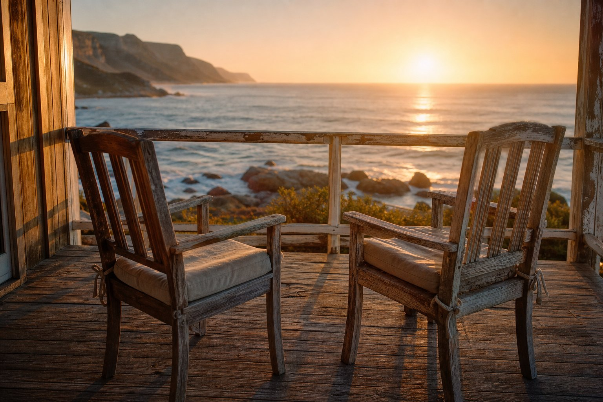

Wanneer jy hom nodig het
Met liefde, van die stoep af.
Kom kuier
Crafford
Liefhebber van die see, die bosveld, en ’n lag wat ’n huis kon volmaak.


’n Plek om te kuier
Liefhebber van die see, die bosveld, en ’n lag wat ’n huis kon volmaak.
Wanneer jy hom nodig het
Met liefde, van die stoep af.
Sout, wind, en die lang horison.
Doringbome, rooi grond, ’n hemel wat die waarheid praat.
03 · Sy lag
Hy het ’n wonderlike sin vir humor gehad. Die hande in die lug, die pyp, die storie by die vuur. As jy die stemnota kry wat op daardie lag eindig, hoort dit hier.
Die pad
Loop dit stadig. Sy foto’s, sy ritte, die see en die veld — elke herinnering op sy plek, van toe tot nou.
Luister
Sy stemnotas woon hier — die Sondag-hallo, die grap wat hy nie kon klaarmaak nie, die ek lief julle. Druk speel wanneer jy hom moet hoor.
Sit ’n .m4a, .mp3 of .wav in
assets/voices/, en noem dit by ’n herinnering in js/content.js.
Die eerste keer dat jy dit speel, word hierdie kamer syne.
Oupa Attie · Frekwensie
Kies ’n stemnota
Kyk
Al die foto’s, in die orde van die tydlyn. Tik op enige prent om daarby te sit.
Bly
Steek ’n lantern aan. Los ’n paar woorde. Die gloed bly op hierdie toestel, soos ’n stoel wat nog warm is.